Papers in preparation
|
|
P1. |
The cutoff profile for exclusion processes in any dimension, with Rodrigo Marinho.
39 pages, Version 0.98, arXiv soon.
|
|
Consider symmetric simple exclusion processes, with or without Glauber dynamics on the boundary set, on a sequence of connected unweighted graphs \(G_N=(V_N,E_N)\) which converge geometrically and spectrally to a compact connected metric measure space.
Under minimal assumptions, we prove not only that total variation cutoff occurs at times \(t_N=\log|V_N|/(2\lambda^N_1)\), where \(|V_N|\) is the cardinality of \(V_N\), and \(\lambda^N_1\) is the lowest nonzero eigenvalue of the nonnegative graph Laplacian; but also the limit profile for the total variation distance to stationarity.
The assumptions are shown to hold on the \(D\)-dimensional Euclidean lattices for any \(D\geq 1\), as well as on self-similar fractal spaces.
Our approach is decidedly analytic and does not use extensive coupling arguments.
We identify a new observable in the exclusion process---the cutoff semimartingales---obtained by scaling and shifting the density fluctuation fields.
Using the entropy method, we prove a functional CLT for the cutoff semimartingales converging to an infinite-dimensional Brownian motion, provided that the process is started from a deterministic configuration or from stationarity.
This reduces the original problem to computing the total variation distance between the two versions of Brownian motions, which share the same covariance and whose initial conditions differ only in the coordinates corresponding to the first eigenprojection.
|
| P2. |
Non-equilibrium and stationary density fluctuations in the boundary-driven exclusion process on the Sierpinski gasket, with Chiara Franceschini, Patrícia Gonçalves, and Otávio Menezes. |
|
This paper is a continuation of 16, and the focus is on characterizing the non-equilibrium density fluctuations when the 3 reservoir rates are not identical.
More precisely, under diffusive scaling we establish: the hydrostatic limit for the stationary measures of the discrete processes;
and subsequential convergence of non-equilibrium density fluctuations, which can be upgraded to full convergence to an Ornstein-Uhlenbeck process if the initial-time fluctuations are centered Gaussian.
From this we show that at stationarity, the fluctuation about the mean density profile \(\bar\rho(\cdot)\) is a centered Gaussian field whose covariance has density
\(
\bar\rho(x)(1-\bar\rho(x)) 1_{\{x=y\}}- \frac{2}{3} \int_{SG} \, 2{\sf G}^{(2)}((z,z),(x,y)) \,d\Gamma(\bar\rho)(z)
\)
with respect to the product self-similar measure on \(SG\times SG\).
Unlike the 1D case, it is unclear how to interpret the second term above, the convolution of the Green's function \({\sf G}^{(2)}\) on the diagonal of \(SG\times SG\) with the energy measure \(d\Gamma(\bar\rho)\) on \(SG\).
To prove all the above, we need to carefully estimate the two-point correlation functions in the exclusion process, and bring inputs from analysis on fractals, Dirichlet forms, and \(\Gamma\)-calculus.
|
| P3. |
Scaling limits of fluctuations in weakly asymmetric exclusion processes on resistance spaces. |
Submitted
|
|
|
16. |
Local ergodicity in the exclusion process on an infinite weighted graph.
36 pages, submitted (2018+). |
|
In this paper I prove, on every strongly recurrent weighted graph, the coarse-graining arguments needed to pass from the microscopic observables (in the exclusion process) to the corresponding macroscopic averages.
The two-blocks estimate is based on the moving particle lemma established in paper 9.
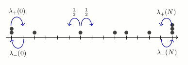
|
2021+
|
|
|
18. |
Higher order hydrodynamics and equilibrium fluctuations of interacting particle systems, with Federico Sau.
Markov Processes Relat. Fields 27, 339-380 (2021). |
|
17. |
Asymptotic behavior of density in the boundary-driven exclusion process on the Sierpinski gasket, with Patrícia Gonçalves.
45 pages, to appear in Math. Phys. Anal. Geom. (2021+). |
|
In this paper we prove a LLN and a CLT for the particle density in the boundary-driven exclusion process on the Sierpinski gasket.
Depending on the strength of the boundary reservoirs' dynamics, the particle density evolves according to the heat equation with Dirichlet, Robin, or Neumann boundary condition.
In the equilibrium setting, we prove that the density fluctuations satisfy the Ornstein-Uhlenbeck equation with the corresponding boundary condition.
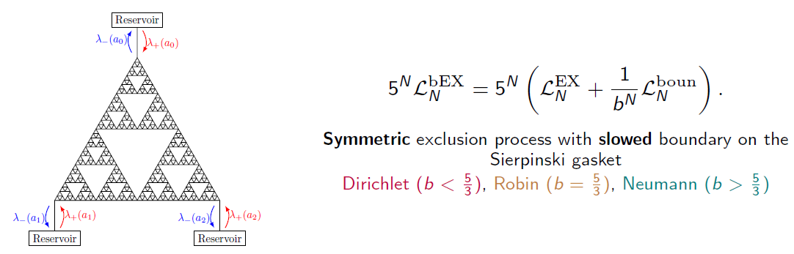
|
2020
|
|
|
15. |
Spectral decimation of the magnetic Laplacian on the Sierpinski gasket: Solving the Hofstadter-Sierpinski butterfly, with Ruoyu (Tony) Guo.
Commun. Math. Phys. 380, 187-243 (2020).
A MATLAB code for generating the Hofstadter-Sierpinski butterfly is provided in the appendix of the paper. |
|
In this paper we provide a recursive construction of the magnetic spectrum on the Sierpinski gasket under uniform magnetic field, thereby solving the "Hofstadter-Sierpinski spectral problem" in its entirety.
The renormalization map is a 3-parameter map involving non-rational functions. (As far as we know, this is the first time spectral decimation has been carried out with non-rational functions. We succeeded in carrying out the decimation in all scenarios, including the exceptional set for spectral decimation.)
In special cases, we can also compute determinants of the magnetic Laplacians on the gasket, which induce a random spatial process called the cycle-rooted spanning forest (CRSF) process, cf. Rick Kenyon's 2011 Annals of Probability paper.
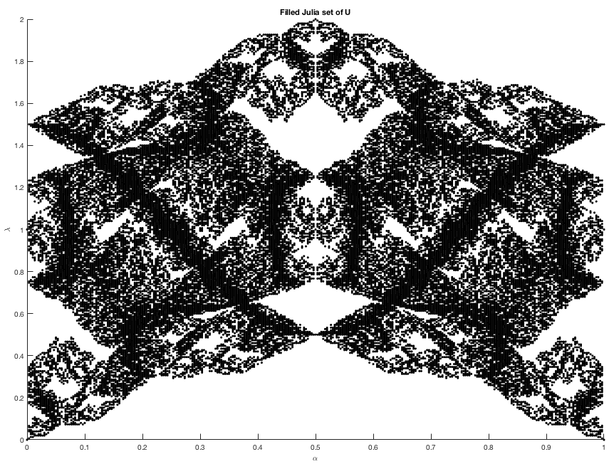
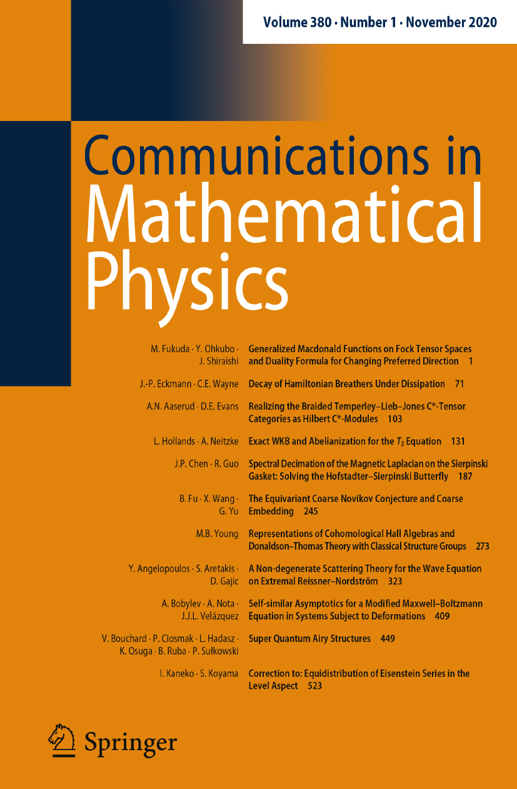
|
|
14.
|
Laplacian growth and sandpiles on the Sierpinski gasket: limit shape universality & exact solutions, with Jonah Kudler-Flam.
Ann. Inst. Henri Poincaré Comb. Phys. Interact. 7 (2020), 585-664.
Click here for Jonah's AutomataSG program and animations on GitHub.
|
|
In this paper we solve the rotor-router aggregation problem and the abelian sandpile growth problem on the graphical Sierpinski gasket (SG) when particles are launched from the corner vertex.
The sandpile growth problem is solved exactly via a renormalization scheme involving self-similar sandpile tiles.
In the process we also prove the identity elements of the sandpile groups of subgraphs of SG (with two different boundary conditions).
Conclusion: The four Laplacian growth models---IDLA, rotor-router aggregation, divisible sandpiles, and abelian sandpiles---started from the corner vertex of SG satisfy "limit shape universality" in the sense of Levine and Peres (2017).

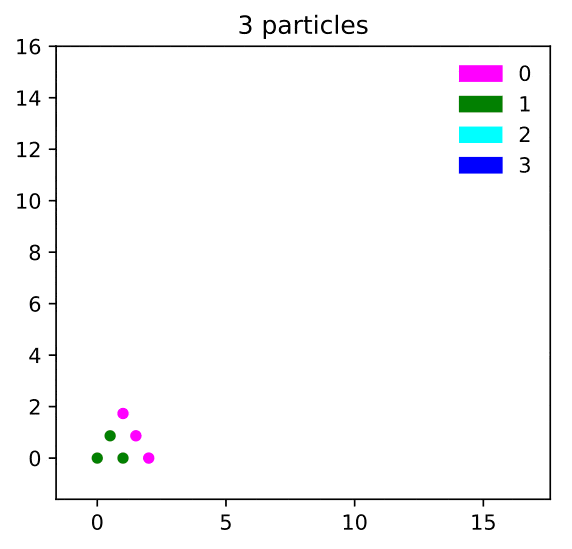
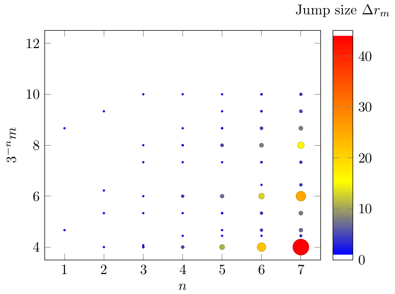
|
|
13.
|
Internal DLA on Sierpinski gasket graphs, with Wilfried Huss, Ecaterina Sava-Huss, and Alexander Teplyaev.
"Analysis and Geometry on Graphs & Manifolds," M. Keller et al. (Eds.), London Mathematical Society Lecture Notes, Cambridge University Press (2020), pp. 126-155. |
|
In this paper we prove that starting from a corner vertex of SG, an internal diffusion-limited aggregation process (where successive i.i.d. random walks deposit upon first exit from the previous cluster) fills balls in the graph metric with probability 1.
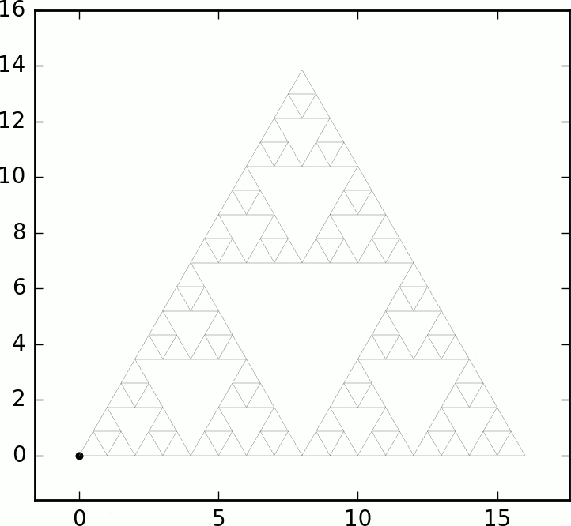
See also the shape theorem for divisible sandpiles on SG by Huss and Sava-Huss.
|
|
12.
|
Fractal AC circuits and propagating waves on fractals, with
Eric Akkermans,
Gerald Dunne,
Luke G. Rogers,
and Alexander Teplyaev.
9 pages, Chapter 18 in "Analysis, Probability, and Mathematical Physics on Fractals," P. Alonso-Ruiz et al. (Eds.), World Scientific Publishing (2020). |
2018
|
|
11.
|
From non-symmetric particle systems to non-linear PDEs on fractals, with Michael Hinz and Alexander Teplyaev.
In A. Eberle et al. (Eds.), Stochastic Partial Differential Equations and Related Fields: In Honor of Michael Röckner SPDERF, Bielefeld, Germany, October 10 -14, 2016, Springer Proceedings in Mathematics & Statistics (2018), pp. 503-513.
|
|
10.
|
Regularized Laplacian determinants of self-similar fractals, with Alexander Teplyaev and Konstantinos Tsougkas.
Lett. Math. Phys. 108 (2018) 1563-1579. (See also correction: pp. 1581-1582.)
|
|
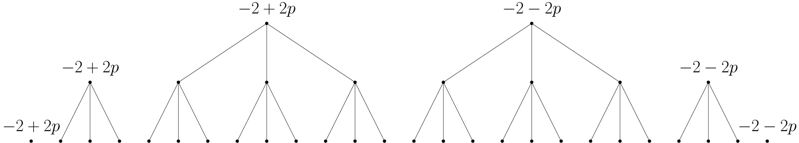
In this paper we give rigorous meaning to regularized logarithmic Laplacian determinants on several fractal graphs, using properties of the spectral zeta function.
In two examples (the double-sided SG and the double-sided pq model) we find that the logarithmic discrete graph Laplacian determinant has a leading-order term whose coefficient is the asymptotic complexity constant in the enumeration of spanning trees, and whose lagging term corresponds to the regularized logarithmic Laplacian determinant.
Our results generalize those of Chinta, Jorgenson, and Karlsson on the discrete tori, and have implications for quantum fields and statistical mechanics on fractals.
|
2017
|
|
9.
|
The moving particle lemma for the exclusion process on a weighted graph.
Electron. Commun. Probab. 22 (2017), paper no. 47.
|
|
|
|
8.
|
Power dissipation in fractal AC circuits,
with Luke G. Rogers, Loren Anderson, Ulysses Andrews, Antoni Brzoska, Aubrey Coffey, Hannah Davis, Lee Fisher, Madeline Hansalik, Stephen Loew, and Alexander Teplyaev. (2015 UConn math REU fractals group)
J. Phys. A: Math. Theor. 50 325205 (2017)
|
|
|
|
7.
|
Wave equations on one-dimensional fractals with spectral decimation and the complex dynamics of polynomials, with Ulysses Andrews, Grigory Bonik, Richard W. Martin, and Alexander Teplyaev.
J. Fourier Anal. Appl. 23 (2017) 994-1027. Click here for the wave animations described in the paper.
|
|
We study wave propagation on the pq-model, a self-similar inhomogeneous wave medium on the unit interval, with an initial approximate delta pulse at the origin.
Using the spectral resolution of the Laplacian (via spectral decimation), we prove that the solution of the wave equation can be approximated uniformly in space by a Fourier series, up to some cutoff time.
This gives a quantitative glimpse into the "infinite speed of wave propagation" phenomenon on fractals.
|
|
6.
|
Stabilization by Noise of a \(\mathbb{C}^2\)-Valued Coupled System, with Lance Ford, Derek Kielty, Rajeshwari Majumdar, Heather McCain, Dylan O'Connell, and Fan Ny Shum.
(2015 UConn math REU stochastics group)
Stoch. Dyn. 17 (2017) 1750046.
|
|
In this paper we study a coupled ODE system in two complex dimensions that admits finite-time blow-up solutions.
We show analytically and numerically that stabilization can be achieved by adding a suitable Brownian noise, and that the resulting system of SDEs is ergodic.
The proof uses Girsanov theorem to effect a time change from our 2D system to a quasi-1D-system similar to the one studied by Herzog and Mattingly.
|
2016 and prior
|
|
5.
|
Singularly continuous spectrum of a self-similar Laplacian on the half-line, with Alexander Teplyaev.
J. Math. Phys. 57 052104 (2016).
|
|
4.
|
Spectral dimension and Bohr's formula for Schrodinger operators on unbounded fractal spaces, with Stanislav Molchanov and Alexander Teplyaev.
J. Phys. A: Math. Theor. 48 395203 (2015). (JPhysA Cover image)
|
|
3.
|
Entropic repulsion of Gaussian free field on high-dimensional Sierpinski carpet graphs, with Baris Evren Ugurcan.
Stoch. Proc. Appl. 125 (2015) 4632-4673.
|
|
2.
|
Periodic billiard orbits of self-similar Sierpinski carpets, with Robert Niemeyer.
J. Math. Anal. Appl. 416 (2014) 969-994.
|
|
1.
|
Quantum Theory of Cavity-Assisted Sideband Cooling of Mechanical Motion, with Florian Marquardt, Aashish Clerk, and Steven M. Girvin.
Phys. Rev. Lett. 99 093902 (2007).
|
Books edited
|
|
B1.
|
Analysis, Probability and Mathematical Physics on Fractals.
Patricia Alonso-Ruiz, Joe P. Chen, Luke G. Rogers, Robert S. Strichartz, and Alexander Teplyaev (Eds.).
World Scientific Publishing (2020).
|
 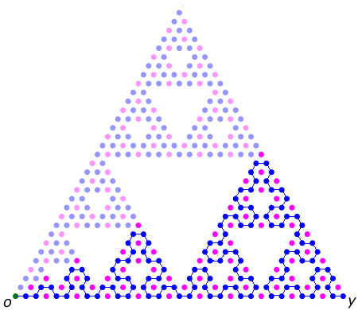
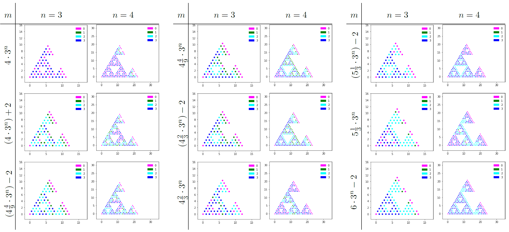
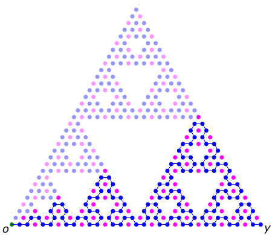
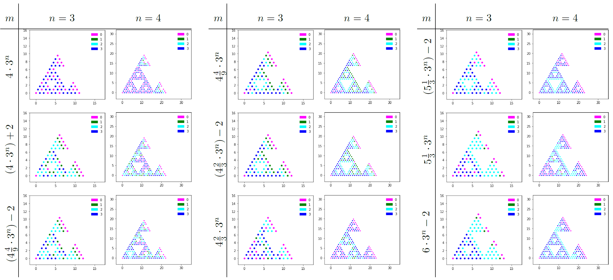